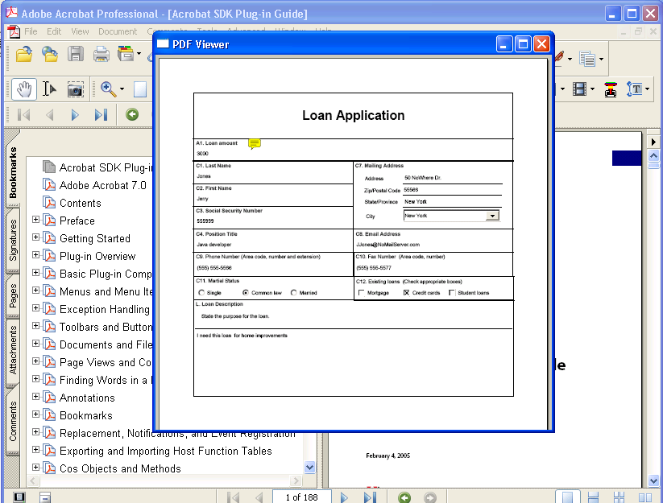

Working with Documents and Files¶
You can use the Acrobat core API to perform operations on PDFs and files, including opening a PDF in an external window. When working with documents and files, use the following typedefs:
An
AVDoctypedef (from the AV layer) represents a document as a window in Acrobat or Adobe Reader. A singleAVDocobject exists for each displayed document. Operations onAVDocobjects are usually visual modifications to the document’s view.A
PDDoctypedef (from the PD layer) represents a document as a PDF file. You work withPDDocobjects to make changes to a document’s contents. Using aPDDocobject, you can access components, such as aPDPageobject.An
ASFiletypedef (from the AS layer) represents a document as an open file.
Opening PDF documents¶
You can use the Acrobat core API to create application logic that opens a PDF in Acrobat or Adobe Reader. The method that opens a PDF file is AVDocOpenFromFile. Before you invoke this method, you must create an ASPathName object, which is a platform-independent path value that specifies the PDF file to open.
With Acrobat or Adobe Reader 8.0 and later, you can open PDFs that are based on Unicode-named files. (See Working with Unicode Paths.)
You can create an ASPathName object by using different techniques. This section describes how to create an ASPathName object by invoking the ASFileSysCreatePathName method to convert a platform specific path name to an ASPathName object. This method requires the following arguments:
An
ASFileSysobject that represents the file system in which you are creating anASPathNameobject. (See Creating an ASFileSys object.)An
ASAtomobject that specifies the data type of the third argument. You can specifyCstring, which is accepted by the default file system on all platforms. In Windows, the path can be absolute (C:folderfile.pdf) or relative (...folderfile.pdf). In Mac OS, it must be an absolute path separated by colons (VolumeName:Folder:file.pdf). For information about additional supported values, see theASFileSysCreatePathNamemethod in the Acrobat and PDF Library API Reference.A null- terminated character that specifies the PDF file on which the
ASPathNameobject is based.A null- terminated character that specifies additional data that you can use. You can pass
NULL. For more information, see theASFileSysCreatePathNamemethod in the Acrobat and PDF Library API Reference.
The ASFileSysCreatePathName method returns an ASPathName object. You can also create an ASPathName object by displaying an open dialog box. (See Displaying an open dialog box.)
To programmatic-ally open a PDF file in Acrobat or Adobe Reader, invoke the AVDocOpenFromFile method and pass the following arguments:
An
ASPathNameobject that specifies the PDF file to open.An
ASFileSysobject that represents the file system in which the PDF file is located. (See Creating an ASFileSys object.)An
ASTextobject that specifies a string value to display in the Adobe Reader or Acrobat title bar.
The following code example opens a PDF that is based on a file named PurchaseOrder.pdf.
//Specify the PDF file to open (host encoded names only)
const char* myPath = "C:PurchaseOrder.pdf";
ASAtom pathType = ASAtomFromString("Cstring");
//Create an ASText object
ASText titleText = ASTextNew();
ASTextSetPDText(titleText, "This PDF was opened by using the Acrobat SDK");
//Create an ASPathName object
ASFileSys fileSys = ASGetDefaultFileSysForPath(pathType, myPath);
ASPathName pathName = ASFileSysCreatePathName(fileSys, pathType, myPath, NULL);
//Open the PDF file
AVDoc myDoc = AVDocOpenFromFile(pathName, fileSys, titleText);
//Do some clean up
ASFileSysReleasePath(fileSys, pathName);
ASTextDestroy(titleText);
Opening a PDF in an external window¶
You can use the Acrobat core API to open a PDF in an external window. For example, from within Adobe Reader or Acrobat, you can let a user select a PDF file and then display the PDF in an external window. This lets a user view two separate PDFs at the same time.
The following image shows a PDF displayed in an external window.
In addition to using the typedefs introduced in this chapter, you must also use the following typedefs to open a PDF in an external window:
AVDocOpenParamsRec- defines required parameters for opening a PDF in a window. This typedef lets you control the external window’s size, location, and visibility.ExternalDocServerCreationDataRec- defines data that is used in conjunction with anAVDocobject that is displayed in an external window.
To open a PDF in an external window, perform the following tasks:
Create a new window.
Create an
AVDocOpenParamsRecobject.Create a
ExternalDocServerCreationDataRecobject.Display an open dialog box to enable a user to retrieve a PDF file to open.
Display the PDF that the user selected within a window.
Creating a Window¶
You must programmatic-ally create the external window in which to display a PDF. To create a window, you invoke standard platform C functions and not the Acrobat core API. For example, if you are creating your plugin in Windows, you can use the Win32 API to create a window. In this situation, part of the process of creating a window is to register the window class and define the window procedure. After you perform these tasks, you can obtain a handle to the window by invoking the CreateWindow function. For information about this function, see the MSDN online help at http://msdn.microsoft.com/library/default.asp.
Note
Application logic that creates a window is shown in Opening a PDF in an external window.
Defining the parameters for an external window¶
You must create an AVDocOpenParamsRec object in order to open and display a PDF in an external window. This object defines required parameters for opening a PDF within an external window. After you create an AVDocOpenParamsRec object, allocate its buffer size and set the following attributes:
size: The size of the data structure. This attribute must be set to
sizeof(AVDocOpenParamsRec).useFrame: If
true, theframeattribute specifies the size and location of the window in which the PDF is displayed. Iffalse, theframeattribute is ignored and a default frame is used.frame: An
AVRectobject specifying the size and location of the window in which the PDF is displayed. In the Windows operating system, the coordinates are MDI client coordinates. In Mac OS, the coordinates are global screen coordinates. This attribute is ignored if theuseFrameattribute isfalse.useVisible: If
true, thevisibleattribute determines whether the window is visible after the PDF is opened. If this attribute isfalse, then thevisibleattribute is ignored.visible: Specifies the window’s visibility. If this attribute is
falseand theuseVisibleattribute istrue, then theframeattribute is ignored regardless of the value of theuseFrameattribute.
If you are using the Windows operating system and this attribute is true, the PDF is opened in a visible window. If this attribute is false, the PDF is opened in a minimized window. This attribute is ignored if the useVisible attribute is false.
useServerType: An
ASBoolvalue that specifies whether theserverTypeandserverCreationDataattributes are used.serverType: The name of the
AVDocserver for thisAVDocobject. SpecifyEXTERNALfor an external window.serverCreationData: Platform-dependent server data to associate with the
AVDocserver. If theserverTypeattribute isEXTERNAL, this attribute must be assigned the address of theExternalDocServerCreationDataobject.useViewType: An
ASBoolvalue that specifies whether theviewTypeattribute is used.viewType: Specifies the appearance of the window that contains the PDF. The following values are valid:
AVPageView: Displays only the page view of the document. User interface components such as display scrollbars, toolbars, bookmarks, and thumbnails panes are not displayed. Annotations, such as links, are active.
AVDocView: Displays the page view of the document as well as scroll bars, bookmarks, and the thumbnails pane. Annotations, such as links, are active.
AVExternalView: Displays the page view of the document as well as scroll bars, toolbars, bookmarks, and the thumbnails pane. Annotations, such as links, are active.
AVEmbeddedView: Embeds the PDF file in an external document such as an HTML file. The first page of the PDF is displayed; however, user-interface component such as scroll bars, toolbars, bookmarks, and the thumbnails pane are not displayed. Annotations, such as links, are not displayed or active.
useReadOnly: An
ASBoolvalue that specifies whether theReadOnlyattribute is used.readOnly: An
ASBoolvalue that opens the document in read-only mode if set totrue.useSourceDoc: An
ASBoolvalue that specifies whether theSourceDocattribute is used.sourceDoc: An
AVDocwhose window is taken over by the new PDF.
Note
Application logic that creates an AVDocOpenParamsRec object is shown in Opening a PDF in an external window.
Creating a handler for an external window¶
You must create an ExternalDocServerCreationDataRec object in order to open a PDF in an external window. This object contains callback functions that implement a window handler. After you create an ExternalDocServerCreationDataRec object, allocate its buffer size and set the following attributes:
size: The size of the data structure. This attribute must be set to
sizeof(ExternalDocServerCreationDataRec).platformWindow: A platform-dependent structure of type
ExternalDocWindowDatarepresenting a window. This is a platform specific value:Windows: use a
HWNDvalue cast asExternalDocWindowDataMac OS: use an
ExternalDocWindowDataobject
acrobatProc: An
AVExecuteProccallback that is invoked when the Acrobat button (if present) is clicked in an external application. This attribute is optional.acrobatProcData: Client specific data that is used in the
AVExecuteProccallback. This attribute is optional.
For a complete list of attributes that belong to an ExternalDocServerCreationDataRec object, see the Acrobat and PDF Library API Reference.
Note
Application logic that creates an ExternalDocServerCreationDataRec object is shown in Opening a PDF in an external window.
Displaying an open dialog box¶
You can display an open dialog box that enables a user to select a PDF to open. In addition to describing how to create an open dialog box, this section also describes how to use a dialog box to create an ASPathName object and an ASFileSys object, which are both used to open a PDF.
The Acrobat core API has a typedef named AVOpenSaveDialogParamsRec that you use to display an open dialog box. The AVOpenSaveDialogParamsRec typedef contains the following attributes that you programmatic-ally set:
size: The size of the
AVOpenSaveDialogParamsRecobject’s buffer.flags: An
AVOpenSaveDialogFlagsvalue that specifies the dialog box’s appearance. The following values are valid:kAVOpenSaveAllowAllFlag: Specifies
All Files(*.*)for the dialog box. This value is only applicable for an open dialog box.kAVOpenSaveAllowMultiple: Allows multiple files to be opened through the dialog box. This value is only applicable for an open dialog box.
kAVOpenSaveAllowForeignFileSystems: Allows file systems other than the default to be used to open the files. You need to select this value to open Unicode-named files. This value is only applicable for an open dialog box.
kAVOpenSaveAllowSettingsButton: Adds a settings button to the dialog box. This value is applicable to both open and save dialog boxes.
kAVOpenSaveMergeTogetherPassedFilters: Meaningful only for open dialog boxes with more than one filter.
parentWindow: An
AVWindowobject that specifies the parent window for the dialog box. This attribute is ignored on Mac OS.windowTitle: An
ASTextobject that specifies the title for the dialog box. This attribute can beNULL, in which case the default title is used.actionButtonTitle: An
ASTextobject that specifies the title of the action button. This attribute can beNULL, in which case the default title is used.cancelButtonTitle: An
ASTextobject that specifies the title of the cancel button. This attribute can beNULL, in which case the default title is used.initialFileSys: An
ASFileSysobject that specifies the default file system. This value can beNULLif theflagsattribute does not containkAVOpenSaveAllowForeignFileSystems.initialPathName: An
ASPathNameobject that specifies an initial path location. This value can beNULL.initialFileName: Specifies an initial file to save. This value is ignored for an open dialog box.
fileFilters: An array of pointers to addresses of
AVFileFilterRecobjects that act as a file filter (this attribute is set in the example that is described in this section).numFileFilters: Specifies the number of
AVFileFilterRecpointers assigned to thefileFiltersattribute.
To display an open dialog box, perform the following tasks:
Create an
AVOpenSaveDialogParamsRecobject.
AVOpenSaveDialogParamsRec dialogParams;
Create an
AVFileFilterRecobject used to store a series of file type descriptors that define a file filter for an open or save dialog box. Secondly, create a pointer to anAVFileFilterRec.
AVFileFilterRec filterRec,*filterRecP;
Create an
AVFileDescRecobject used to store file extensions in an open dialog box.
AVFileDescRec descRec;
Set the
AVFileDescRecobject’sextensionattribute with the valuePDF.
strcpy (descRec.extension, "pdf");
Allocate the size of the
AVFileFilterRecobject’s buffer by using thememsetmethod. Next, set theAVFileFilterRecobject’sfileDescsandnumFileDescsattributes. ThefileDescsattribute defines file type and extension information. You can assign the address of theAVFileDescRecobject to thefileDescsattribute. ThenumFileDescsattribute specifies the number ofAVFileDescRecsobjects assigned to thefileDescsattribute.
memset (&filterRec, 0, sizeof(AVFileFilterRec));
filterRec.fileDescs = &descRec;
filterRec.numFileDescs = 1;
Assign the
AVFileFilterRecpointer with the address of theAVFileFilterRecobject (this pointer is used to set an attribute that belongs to theAVOpenSaveDialogParamsRecobject).
filterRecP = &filterRec;
Set attributes that belong to the
AVOpenSaveDialogParamsRecobject. In this example, thesize,fileFilters, andnumFileFiltersattributes are set. Assign thefileFiltersattribute with the address of the pointer that points toAVFileFilterRec.
memset (&dialogParams, 0, sizeof (AVOpenSaveDialogParamsRec));
dialogParams.size = sizeof(AVOpenSaveDialogParamsRec);
dialogParams.fileFilters = &filterRecP;
dialogParams.numFileFilters = 1;
Set the
AVFileFilterRecobject’sfilterDescriptionattribute by invoking theASTextSetEncodedmethod and passing the following arguments:An
ASTextobject that is used to store the string value.A pointer to a
chardata type.An
ASHostEncodingvalue that specifies an encoding type.
filterRec.filterDescription = ASTextNew();
ASTextSetEncoded (filterRec.filterDescription, "Adobe PDF Files",
ASScriptToHostEncoding(kASRomanScript));
Set the
AVOpenSaveDialogParamsRecobject’swindowTitleattribute by invoking theASTextSetEncodedmethod (see step 8 for a description of this method).
dialogParams.windowTitle = ASTextNew();
ASTextSetEncoded (dialogParams.windowTitle, "Select A PDF
To Open",
ASScriptToHostEncoding(kASRomanScript));
Display the open dialog box by invoking the
AVAppOpenDialogmethod and passing the following arguments:
The address of an
AVOpenSaveDialogParamsobject that represents the dialog box to open.The address of an
ASFileSysobject. This method will populate theASFileSysobject with the file system in which the file that the user selects is located. This argument can beNULLifkAVOpenSaveAllowForeignFileSystemsis not set as theflagsvalue.The address of a pointer that points to an
ASPathNametypedef. This argument is populated with the file that was select by the user.The address of an
AVArraySizeobject. This value can be NULL ifkAVOpenSaveAllowMultipleis not set as theflagsvalue.The address of an
AVFilterIndexobject. This value can be NULL.
The AVAppOpenDialog method returns true if the user clicks the action button (for example, the Open button). If the user clicks the Cancel button, the method returns false.
ASPathName * pathName = NULL;
ASBool bSelected = AVAppOpenDialog(&dialogParams, NULL,(ASPathName**)&pathName, NULL, NULL);
Release existing
ASTextobjects by invoking theASTextDestroymethod.
ASTextDestroy (filterRec.filterDescription);
ASTextDestroy (dialogParams.windowTitle);
Note
This application logic is shown in Opening a PDF in an external window.
Displaying a PDF in a window¶
Before you attempt to display a PDF in an external window, you must programmatic-ally create the window. (See Creating a Window.)
To display a PDF within an external window, perform the following tasks:
Open a PDF file by invoking the
ASFileSysOpenFilemethod and passing the following arguments:An
ASFileSysobject that represents the file system in which the PDF file is located. (See Creating an ASFileSys object.)An
ASPathNameobject that represents the path in which the PDF file is located.An
ASFileModeobject that represents the mode in which to open the file. For example, specifyASFILE_READto open the PDF in read mode.The address of an
ASFileobject. This method populates this argument with the file that was opened (file information is obtained from theASPathNameobject).
If the ASFileSysOpenFile method is successful, then 0 is returned. Otherwise, an error value is returned.
Display the PDF within the window by invoking the
AVDocOpenFromASFileWithParamsmethod and passing the following arguments:An
ASFileobject that specifies a PDF file to display (you can use the sameASFileobject whose address was passed to theASFileSysOpenFilemethod).An
ASTextobject that specifies the text to display in the window’s title bar. Create anASTextobject by invoking theASTextFromScriptTextmethod.The address of the
AVDocOpenParamsRecobject that you created. (See Defining the parameters for an external window.)
The following code example opens a PDF in an external window. The application logic that is located within the OpenExternalWindow user-defined function creates the window and displays a PDF within the window. A structure named gDocInfo that stores information such as the file to open is also defined.
This code example contains a user-defined method named AVWndProc that acts as a window procedure and another user-defined function named InitializeWindowHandler that registers the windows class that is specified as an argument to CreateWindow.
Also shown in this code example is application logic that displays an open dialog box that enables a user to select a PDF file to open. This application logic is located within a user-defined function named OpenPDFFile. (See Displaying an open dialog box.)
struct t_ExternDocInfo
{
AVDoc doc;
ASFile file;
} gDocInfo;
//Create a function that opens a PDF in an external window
ACCB1 void ACCB2 OpenExternalWindow (void * data)
{
//Declare local variables
ASPathName pathName;
ASInt32 retVal;
ASFileSys myFileSys;
bool bWindowIsOpen = false;
//Create an AVDocOpenParamsRec object
AVDocOpenParamsRec params;
//Declare an ExternalDocServerCreationDataRec object
ExternalDocServerCreationDataRec creationData;
//Invoke CreateWindow to obtain a handle to a window
HWND externHWnd = CreateWindow ("ExternalWindow", "PDFViewer",
WS_OVERLAPPEDWINDOW,50, 50, 500, 500, 0, 0, gHINSTANCE, NULL);
if (externHWnd)
{
//Set attributes that belong to the AVDocOpenParamsRec object
memset(¶ms, 0, sizeof(AVDocOpenParamsRec));
params.size = sizeof(AVDocOpenParamsRec);
params.useFrame = false;
params.useVisible = true;
params.visible = true;
params.useServerType = true;
params.serverType = "EXTERNAL";
params.serverCreationData = (void*) &creationData;
params.useViewType = true;
params.viewType = "AVDocView";
params.useReadOnly = true;
params.readOnly = true;
params.useSourceDoc = false;
params.useViewDef = false;
//Set attributes that belong to the ExternalDocServerCreationDataRec object
memset(&creationData, 0, sizeof(ExternalDocServerCreationDataRec));
creationData.size = sizeof(ExternalDocServerCreationDataRec);
creationData.platformWindow = (ExternalDocWindowData)externHWnd;
creationData.acrobatProc = NULL;
creationData.crossDocLinkWithDestData = (void *)externHWnd;
//Invoke OpenPDFFile to display an open dialog box that
//enables a user to select a PDF file
//Pass the address of the ASFileSys object
pathName = OpenPDFFile(&myFileSys);
//If PathName is valid
if (pathName) {
//Open the file specified in the file system
retVal = ASFileSysOpenFile (myFileSys, pathName, ASFILE_READ,
&gDocInfo.file);
if (retVal ==0) {
//Create a ASText object used to display in the new window
ASText title = ASTextFromScriptText ("PDF Viewer", kASRomanScript);
//Opens and displays a document from a file, using the specified
//parameters to control the window's size, location, and visibility
AVDocOpenFromASFileWithParams (gDocInfo.file, title, ¶ms);
ASTextDestroy(title);
bWindowIsOpen = true;
} else
AVAlertNote("Failed to open document.");
}
}
}
//Define the AVWndProc function
LRESULT CALLBACK AVWndProc(HWND hwnd, UINT msg, WPARAM wParam, LPARAM lParam)
{
if (msg == WM_DESTROY)
memset (&gDocInfo, 0, sizeof(gDocInfo));
return DefWindowProc (hwnd, msg, wParam, lParam);
}
//Define the InitializeWindowHandler function
ASBool InitializeWindowHandler (void)
{
WNDCLASS wndClass ;
//This is the window class used to display the PDF
wndClass.cbClsExtra = 0;
wndClass.hInstance = gHINSTANCE;
wndClass.style = CS_DBLCLKS;
wndClass.hCursor = (HCURSOR)NULL;
wndClass.hbrBackground = (HBRUSH)NULL;
wndClass.lpfnWndProc = AVWndProc;
wndClass.hIcon = (HICON)NULL;
wndClass.lpszMenuName = NULL;
wndClass.cbWndExtra = 0;
wndClass.lpszClassName = "ExternalWindow";
if (!RegisterClass(&wndClass))
return false;
return true;
}
//Display an open dialog box that enables a user to select a PDF file
ASPathName OpenPDFFile(ASFileSys * ASF)
{
//Declare an AVOpenSaveDialogParamsRec object
AVOpenSaveDialogParamsRec dialogParams;
//Create local variables
AVFileFilterRec filterRec,*filterRecP ;
AVFileDescRec descRec;
ASPathName * pathName = NULL;
ASFileSys fileSys = NULL;
ASBool bSelected = false;
char errorBuf[256];
//Set up the PDF file filter description
strcpy (descRec.extension, "pdf");
descRec.macFileType = 'PDF ';
descRec.macFileCreator = 'CARO';
//Set attributes that belong to the AVFileFilterRec object
memset (&filterRec, 0, sizeof(AVFileFilterRec));
filterRec.fileDescs = &descRec;
filterRec.numFileDescs = 1;
filterRecP = &filterRec;
//Set attributes that belong to the AVOpenSaveDialogParamsRec object
memset (&dialogParams, 0, sizeof (AVOpenSaveDialogParamsRec));
dialogParams.size = sizeof(AVOpenSaveDialogParamsRec);
dialogParams.fileFilters = &filterRecP;
dialogParams.numFileFilters = 1;
DURING
//Set the AVFileFilterRec object's filterDescription attribute
filterRec.filterDescription = ASTextNew();
ASTextSetEncoded (filterRec.filterDescription, "Adobe PDF Files",
ASScriptToHostEncoding(kASRomanScript));
//Set the AVOpenSaveDialogParamsRec object's windowTitle attribute
dialogParams.windowTitle = ASTextNew();
ASTextSetEncoded (dialogParams.windowTitle, "Select A PDF To
Open",ASScriptToHostEncoding(kASRomanScript));
//Display the Open dialog box - pass the address of the ASFileSys object
bSelected = AVAppOpenDialog(&dialogParams, &fileSys, (ASPathName**)&pathName, NULL, NULL);
HANDLER
//Display an error message to the user
ASGetErrorString (ASGetExceptionErrorCode(), errorBuf, 256);
AVAlertNote (errorBuf);
END_HANDLER
//Destroy the ASText object then return
ASTextDestroy (filterRec.filterDescription);
ASTextDestroy (dialogParams.windowTitle);
//Point the ASFileSys argument to the address of the ASFileSys object
*ASF = fileSys;
return bSelected ? *pathName : NULL;
}
Note
The OpenExternalWindow function can be invoked from an Adobe Reader or Acrobat user interface component, such as a toolbar button or a menu command. Ensure that the InitializeWindowHandler method is invoked before the OpenExternalWindow method; otherwise, the window class is not registered and the PDF file is not displayed in the external window.
Determining the PDF version¶
All PDFs contain PDF version information in the header, such as 1.7. Additionally, PDF files that conform to ISO 32000 can include PDF version extension information that indicates that the PDF may contain PDF extensions added by third-party developers.
The Acrobat API provides methods that let you obtain the PDF version and the PDF version extension information.
PDF version¶
The PDDocGetVersion method lets you obtain the PDF version of a PDF. This PDF version indicates the PDF specification to which the document conforms, such as 1.4 or 1.7.
PDF version extensions¶
Acrobat 8.1 and later add extensions to the PDF specification. These extensions are specified in the Adobe Supplement to ISO 32000. Each extension in that supplement is associated with a base version and an extension level. The Extensions dictionary located in the Catalog dictionary specifies PDF extensions added by Adobe or others.
For example, Acrobat 8.1 added a PDF extension to 3D annotations that enabled support for the PRC format, a highly compressed 3D representation. If a PDF contains a 3D annotation that specifies a PRC file, the PDF also contains an Extensions dictionary in the Catalog dictionary that specifies a base version of 1.7 and an extension level of “1” or greater. The following PDF segment shows the appearance of such an Extensions dictionary.
%PDF 1.7
<</Type /Catalog
/Extensions
<</ADBE
<< /BaseVersion /1.7 /ExtensionLevel 3 >>
>>
>>
Setting the extension level of a document¶
When you add PDF extensions specified by Adobe or others, you must ensure that the Catalog dictionary contains an Extensions dictionary that describes the greatest extension level that can appear in the PDF. The Extensions dictionary can contain one dictionary for each company or other entity that adds PDF extensions.
To set the extension level, use the Cos object methods described in Working with Cos Objects.
Getting the extension level of a document¶
Beginning with Acrobat 9.0, the PDDocGetVersionEx method lets you obtain the Adobe-specific version extension information and the PDF version.
To obtain version extension information introduced by entities other than Adobe, use the Cos object methods described in Working with Cos Objects.
Bridging core API layers¶
To operate on the contents of a PDF, and not just manipulate its representation in Adobe Reader or Acrobat, you must use a PDDoc object. For example, to create an annotation for a PDF, you must create a PDDoc object. (See Creating Annotations.)
You can create a PDDoc object by using an AVDoc object. To get a PDDoc object that corresponds to an AVDoc object, invoke the AVDocGetPDDoc method. This method is referred to as a bridge method because it allows your plugin to access other layers from the AV layer. There are several bridge methods which connect the different API layers (AV, PD, and Cos).
All AVDoc objects have an underlying PDDoc object. Operations on an AVDoc object usually result in visible modifications to the document’s view. If you just want your plugin to make changes to a document’s contents, it can open a PDDoc object directly (that is, without going through an AVDoc object to get the PDDo c object) and use PD layer methods.
Creating a PDDoc object¶
You can access a PDF file’s contents without displaying the PDF file in Acrobat or Adobe Reader. To perform this task, create a PDDoc object by invoking the PDDocOpen method and passing the following arguments:
An
ASPathNameobject that specifies the PDF file on which thePDDocis based. For information about creating anASPathNameobject, see Opening PDF documents.An
ASFileSysobject that represents the file system in which the PDF file is located. (See Creating an ASFileSys object.)A
PDAuthProcauthorization callback that is invoked only if the file has been secured (that is, if the file has either the user or the master password set). This callback must obtain required information to determine whether the user is authorized to open the file. You can passNULLif an authorization callback is not required. For information about callbacks, see Using callback functions.An
ASBoolvalue. When set totrue, an attempt to repair a damaged file is performed. Iffalse, an attempt to repair a damaged file is not performed.
The following code example creates a PDDoc object that is based on a PDF file named PurchaseOrder.pdf and located in the root of the C drive. This code example is located within a user-defined function named getDocument.
PDDoc getDocument()
{
//Declare a PDDoc object
PDDoc myPDDoc;
//Declare a PDAuthProc callback
PDAuthProc myAuthProcPtr;
//Specify the PDF file on which to base the PDDoc object
const char * myPath = "C:PurchaseOrder.pdf";
ASAtom pathType = ASAtomFromString("Cstring");
//Create an ASPathName object
ASFileSys fileSys = ASGetDefaultFileSysForPath(pathType, myPath);
ASPathName pathName = ASFileSysCreatePathName(fileSys,pathType,
myPath,NULL);
//Create the authentication callback
myAuthProcPtr = ASCallbackCreateProto (PDAuthProc,&authProc);
//Create a PDDoc object
myPDDoc = PDDocOpen (pathName, fileSys, myAuthProcPtr, false);
//Release the callback
ASCallbackDestroy (myAuthProcPtr);
return myPDDoc;
}
ASBool authProc(PDDoc TheDoc)
{
//Define business logic that authenticates the user
return true;
}
Creating a PDDoc object for an open PDF¶
You can create a PDDoc object that is based on a PDF that is currently open by performing the following tasks:
Create an
AVDocobject by invoking theAVAppGetActiveDocmethod. This method gets the frontmost document located in Adobe Reader or Acrobat.Create a
PDDocobject by invoking theAVDocGetPDDocmethod. This method requires anAVDocobject and returns aPDDocobject.
AVDoc avDoc = AVAppGetActiveDoc();
PDDoc myPDDoc = AVDocGetPDDoc(avDoc);
Accessing non-PDF files¶
You can use the Acrobat core API to access non-PDF files. Your plugin can open a non-PDF file, write data to it, and then read the data at a later time by using ASFile methods. For example, your plugin can use a text file to track log information or other type of information.
The following code example invokes the Acrobat core API methods to open a file, write data, and read data.
AVAlertNotedisplays an error message if something goes wrong.ASFileSysOpenFileopens a file using the modes specified.ASFileWritewrites data to the file.ASFileClosecloses the file.ASFileReadreads data from the file.ASFileGetEOFgets the current size of a file.
In the following code example, the CreateDataFile user-defined function creates a file and writes data to it. The ReadDataFile user-defined function opens a file and reads data from it.
//Create a global character pointer
char* gDataBuf = "This is some data in the file.";
ACCB1 void ACCB2 ExeProc (void* data)
{
CreateDataFile("C:DataFile.txt");
ReadDataFile("C:DataFile.txt");
}
// Returns false if error, true otherwise
ASBool CreateDataFile (char* pathname)
{
ASPathName path = NULL;
ASFile TheFile = NULL;
ASInt32 err = 0;
ASInt32 numBytes = 0;
ASInt32 mode = ASFILE_WRITE | ASFILE_CREATE;
path = MakeCrossPlatformASPathName (pathname);
if (path == NULL)
{
AVAlertNote ("Unable to gain access to data file.");
return false;
}
err = ASFileSysOpenFile (NULL, path, mode, &TheFile);
if (err != 0) // Returns 0 if no error
{
AVAlertNote ("Unable to open data file for writing.");
return false;
}
numBytes = ASFileWrite (TheFile, gDataBuf, strlen (gDataBuf));
if (numBytes != strlen (gDataBuf))
{
ASFileClose (TheFile);
AVAlertNote ("Number of bytes written was not the expected number.");
return false;
}
ASFileClose (TheFile);
return true;
}
//Read data from a file
void ReadDataFile (char* pathname)
{
ASPathName path = NULL;
ASFile TheFile = NULL;
ASInt32 err = 0;
ASInt32 mode = ASFILE_READ;
char Data[500];
char buf[500];
path = MakeCrossPlatformASPathName (pathname);
if (path == NULL)
{
AVAlertNote ("Unable to gain access to data file.");
return;
}
err = ASFileSysOpenFile (NULL, path, mode, &TheFile);
if (err != 0) // Returns 0 if no error
{
AVAlertNote ("Unable to open data file for reading.");
return;
}
err = ASFileRead (TheFile, Data, ASFileGetEOF (TheFile));
if (err != strlen (gDataBuf))
AVAlertNote ("Number of bytes read was not the expected amount of bytes.");
//NULL terminate the string.
Data[ASFileGetEOF (TheFile) ] = '0'
ASFileClose (TheFile);
strcpy (buf, "Data read was: ");
strcat (buf, Data);
AVAlertNote(Data);
return;
}
//Create a platform-independent path
ASPathName MakeCrossPlatformASPathName (char* platformPathname)
{
ASPathName ThePathName = NULL;
ThePathName = ASFileSysCreatePathName (NULL,ASAtomFromString("Cstring"), platformPathname, 0);
return ThePathName;
}
Printing documents¶
You can use the Acrobat core API to print documents by using one of the following methods:
AVDocPrintPagesAVDocPrintPagesWithParams
The AVDocPrintPages method prints a document without displaying any user dialog boxes. The current printer, page settings, and job settings are used. Printing is complete when this method returns.
The AVDocPrintPagesWithParams method prints a document with a full range of options. Printing is complete when this method returns. It performs embedded printing; that is, it allows a PDF page to print within a bounding rectangle on a page. It allows interactive printing to the specified printer.
To print a document with a range of options, invoke the AVDocPrintPagesWithParams method and pass the following arguments:
An
AVDocobject that represents the PDF from which to print page. For information about creating anAVDocobject, see Opening PDF documents.An instance of the
AVDocPrintParamsdata structure that defines printing parameters. (See the Acrobat and PDF Library API Reference.)
Working with the PDF/X format¶
Beginning PDF Library XI, you can convert an existing PDF file to the PDF/X format. The converter aims at creating an output PDF/X document that is self-contained and whose visual fidelity is maintained over time. The converter manages operations like font embedding, changes in colors while printing, etc., to give a seamless PDF/X conversion process. PDF/X-1a:2001 and PDF/X-3:2003 are the two PDF/X standards that are supported by the PDF processor plugin. For files containing objects that cannot be converted as per the PDF/X standards, the conversion process is aborted.
Note
PDFL SDK XI does not support the conversion of PDF packages or of PDF portfolios to the PDF/X format.
The following lists how various file elements are handled during conversion:
Color Spaces: All color spaces in the input file are converted to PDF/X compliant color spaces. For PDF/X-3:2003, conversions to the US SWOP colorspace is supported.
AcroForms: AcroForms are flattened in the PDF/X compliant output file. This may result in loss of interactivity if the source file includes annotations. In the case of text fields, only the visible text is saved.
Digital Signatures: Digital signatures are flattened and replaced by equivalent graphics operators with the same visual appearance.
Annotations and Actions: The PDF/X standard does not allow the use of annotations or actions inside the print area. Any actions present in the input file will not be available in the output PDF/X file Annotations, if present, are moved outside the print area in the converted PDF/X file. You can choose to turn off the relocation of annotations which will result in the removal of annotations altogether.
Tagged PDF: PDF files that include tags are not supported. All tagging information is lost when a tagged PDF file is converted to the PDF/X format.
Fonts: The conversion is aborted if fonts in the input file are not embedded, the fonts are not present on the system, or the font embedding permissions are not available. Any invisible text in the input file will not be available in the output PDF/X file.
Transparency: Transparency is not supported in the PDF/X format. All transparency is flattened when a file is converted to the PDF/X format
The following APIs are available for conversion using the PDF Processor:
PDFProcessorConvertAndSaveToPDFA
PDFProcessorConvertToPDFA
PDFProcessorTerminate
PDFProcessorConvertAndSaveToPDFX
PDFProcessorConvertToPDFX.
See the Acrobat and PDF Library API Reference for more information.